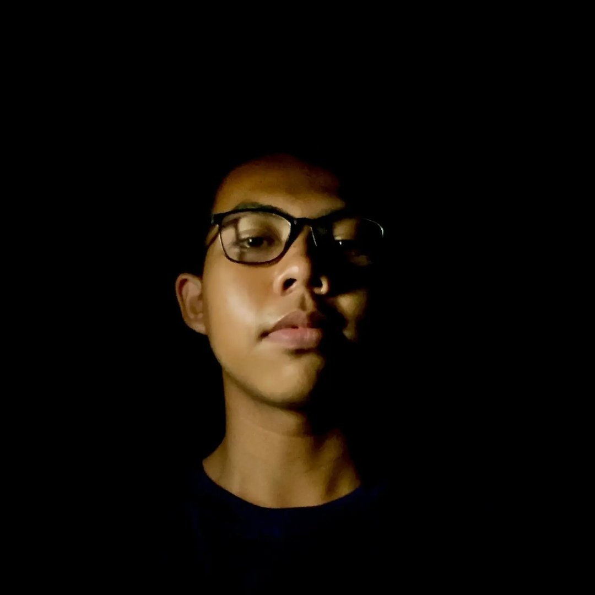

Pelajar & Tech Explorer
Halo, Saya
Diki Eka S
Seorang pelajar yang berfokus pada eksplorasi teknologi, eksperimen hardware Arduino, serta aktif mendirikan dan mengelola komunitas edukasi digital untuk membagikan ilmu pengetahuan.
Documentation & Lab
Portal Proyek & Tutorial Mandiri
Akses seluruh catatan eksperimen Arduino, skema wiring, kodingan C++, dan panduan langkah demi langkah yang pernah saya buat di web dokumentasi.
Ekosistem Konten Digital
ekadevs
Eksperimen hardware Arduino, kodingan, dan behind-the-scenes pembuatan alat.
Zona Literasi Digital
Platform belajar teknologi dasar, literasi digital, dan edukasi publik.
Brain Grow Up
Hub latihan soal, materi PPT, strategi belajar, dan silabus pejuang OSN.
Platform Rekomendasi
Ingin Belajar Tech Lebih Dalam?
Tingkatkan pemahaman koding dan eksplorasi materi teknologi tingkat lanjut.